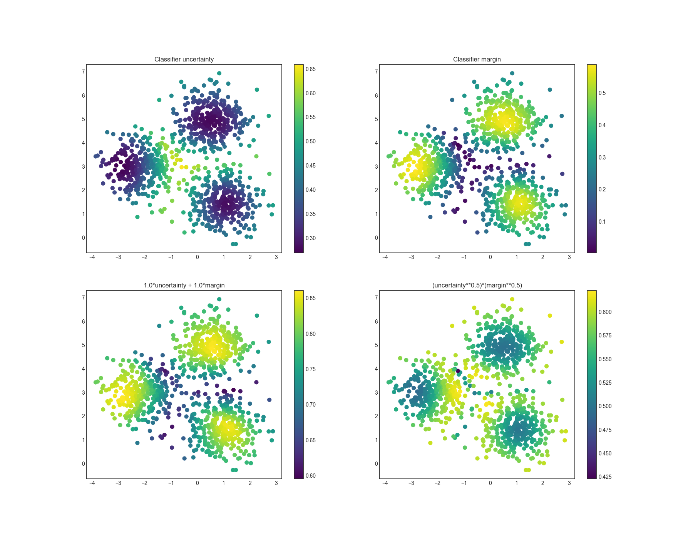

Extending modAL¶
modAL was designed for researchers, allowing quick and efficient prototyping. For this purpose, modAL makes it easy for you to use your customly designed parts, for instance query strategies or new classifier algorithms.
Building blocks of query strategies¶
In modAL, a query strategy for active learning is implemented as a function, taking an estimator and a bunch of data, turning it into an instance from the data you supplied to it. To build elaborate custom query strategies, many building blocks are available. The two main components of a query strategy are the utility measure and the query selector. From an abstract viewpoint, this is how a query strategy looks like.
def custom_query_strategy(classifier, X, a_keyword_argument=42):
# measure the utility of each instance in the pool
utility = utility_measure(classifier, X)
# select the indices of the instances to be queried
query_idx = select_instances(utility)
# return the indices and the instances
return query_idx, X[query_idx]
Putting this to work is as simple as the following.
from modAL.models import ActiveLearner
from sklearn.ensemble import RandomForestClassifier
# initializing the learner
learner = ActiveLearner(
estimator=RandomForestClassifier(),
query_strategy=custom_query_strategy
)
# querying for labels
query_idx, query_instance = learner.query(X)
For an example in practice, see for instance this active regression. In the following, we are going to take a look how can you combine already existing or custom utility measures with each other.
Utility measures¶
The soul of a query strategy is the utility measure. A utility measure
takes a pool of examples (and frequently but optionally an estimator
object) and returns a one dimensional array containing the utility score
for each example. For instance, classifier_uncertainty,
classifier_margin and classifier_entropy from
modAL.uncertainty are utility measures which you can use. You can
also implement your own or you can take linear combinations and
products, as we shall see next.
Linear combinations and products¶
One way of creating new utility measures is to take linear combinations
or products of already existing ones. For this, the function factories
in the module modAL.utils.combination are there to help!
from modAL.utils.combination import make_linear_combination, make_product
from modAL.uncertainty import classifier_uncertainty, classifier_margin
# creating new utility measures by linear combination and product
# linear_combination will return 1.0*classifier_uncertainty + 1.0*classifier_margin
linear_combination = make_linear_combination(
classifier_uncertainty, classifier_margin,
weights=[1.0, 1.0]
)
# product will return (classifier_uncertainty**0.5)*(classifier_margin**0.1)
product = make_product(
classifier_uncertainty, classifier_margin,
exponents=[0.5, 0.1]
)
To use make_linear_combination and make_product, you must supply
functions taking the same arguments!
The newly generated utility measures are demonstrated in the following figure.
Selectors¶
After the individual utility scores are calculated, a query strategy
must determine which instances are to be queried. Two prebuilt selectors
are available in modAL.utils.selection:
multi_argmax(values, n_instances=1) selects the n_instances
highest utility score, while weighted_random(weights, n_instances=1)
selects the instances by random, using the supplied weighting.
Putting them together¶
When the components are given, putting the query strategy together is really simple.
def custom_query_strategy(classifier, X, n_instances=1):
utility = linear_combination(classifier, X)
query_idx = multi_argmax(utility, n_instances=n_instances)
return query_idx, X[query_idx]
This can be used immediately in the active learning workflow! If you would like to experiment with this, you can find the executable script with this example here.
Using your custom estimators¶
As long as your classifier follows the scikit-learn API, you can use it
in your modAL workflow. (Really, all it needs is a .fit(X, y) and a
.predict(X) method.) For instance, the ensemble model implemented in
Committee can be given to an ActiveLearner.
# initializing the learners
n_learners = 3
learner_list = []
for _ in range(n_learners):
learner = ActiveLearner(
estimator=RandomForestClassifier(),
X_training=X_training, y_training=y_training,
bootstrap_init=True
)
learner_list.append(learner)
# assembling the Committee
committee = Committee(learner_list)
# ensemble active learner from the Committee
ensemble_learner = ActiveLearner(
estimator=committee
)
Now you are ready for active learning with an ensemble of classifiers!
If you would like to keep bagging the data pass bootstrap=True to
the .teach() method!